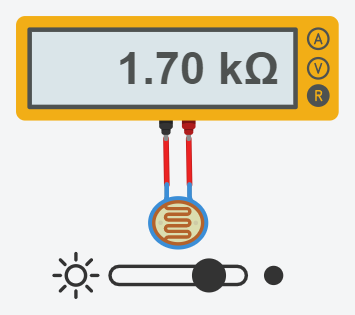

Medindo a luminosidade do ambiente
Uma das funções mais poderosas do Arduino é a sua vasta gama de sensores e módulos disponíveis e sua fácil integração na hora de escrever um código. Imagine poder conectar sensores de temperatura e umidade para acionar um ar condicionado, ou um sensor de luminosidade para controlar o acionamento de uma lâmpada, ou quem sabe automatizar o funcionamento de eletrodomésticos, já pensou acordar e seu café estar prontinho lhe esperando. Melhor ainda, imagine tudo isso integrado e sendo controlado através de um celular ou de um computador! Tudo isso é possível com placas microcontroladoras, como o Arduíno. Infelizmente por agora a implementação destas coisas fogem do escopo deste curso, mas com os projetos próximos aqui demonstrados você terá uma base de conhecimento para começar a trabalhar com módulos e sensores, a partir daí, basta soltar sua criatividade e buscar mais referências externas!
Neste projeto, apesar de simples, terá como objetivo entender como funciona um sensor de luminosidade LDR e com ele implementar um programa que irá monitorar a luminosidade de um ambiente. Caso a luminosidade esteja abaixo de um certo valor, um LED acenderá (o LED serve como uma abstração, em uma aplicação prática você poderia conectar no lugar do LED um módulo relé e acionar uma lâmpada, por exemplo).
O LDR (Light Dependent Resistor, ou em tradução livre, Resistor Dependente de Luz) é um sensor que, como o próprio nome indica, é na verdade um resistor que irá variar a sua resistência de acordo com a luminosidade incidida nele. Quanto mais luz, menor será a resistência, porém os valores específicos podem variar de acordo com condições do ambiente, fabricante do sensor e até mesmo o estado do circuito cujo resistor está inserido.
A plataforma Tinkercad é perfeita para fazer testes com sensores LDR, pois nela além de ajustar a luz incidente no sensor em tempo de execução, é possível monitorar a corrente e a resistência produzida pelo LDR. Basta colocar na área de trabalho um Multímetro (coloque ele no modo R para medir a resistência) e um Fotossensor e conectar os terminais como na imagem abaixo. Após iniciada a simulação, é possível clicar sobre o Fotossensor e ajustar a luminosidade, é possível perceber a mudança do valor da resistência apresentada no multímetro conforme o input de luminosidade é modificado.

Com o entendimento do sensor é possível partir para o projeto, crie um novo sketch em sua IDE do Arduino. Primeiramente será necessário declarar em qual pino digital estará o LED e em qual pino analógico estará o sensor de luminosidade. Pela primeira vez os pinos analógicos aparecem em um projeto, eles tem uma resolução de 10 bits, ou seja, podem enviar/receber valores inteiros de 0 até 1023, tornando sua utilização com sensores perfeitas, já que muitas vezes é necessário ter precisão e/ou uma larga faixa de trabalho (poderia-se usar também algum pino PWM, porém sua resolução é de apenas 8 bits (variação em uma faixa que vai de 0 a 255)).
Hardware
Materiais necessários:
- 1x LED
- 1x Resistor de 330Ω
- 1x Resistor de 10KΩ
- Sensor de Luminosidade LDR
Esquemático:

Software
Para começar, é necessário declarar alguns parâmetros, como os pinos utilizados (conforme configurado no momento da montagem do circuito), uma variável para armazenar o dados lido no sensor, a qual aqui é chamada de luminosidade, já inicializada com 0. Por fim, um valor para o limite de luminosidade, você deve ajustar esse valor conforme sua necessidade, aqui será utilizado 100 pois é o que melhor se adapta no circuito montado na simulação do Tinkercad, mas ao utilizar em outros projetos e em outros meios é necessário modificar esse valor, já que os dados lidos dependem de fatores que vão desde o fabricante do chip até mesmo nas condições de temperatura e umidade do ambiente utilizado.
const int pinoLDR = A0;
const int pinoLED = 3;
int luminosidade = 0;
const int limiteLum = 100;
Na função setup() é necessário definir os pinos de entrada e saída, bem como iniciar o Monitor Serial.
void setup() {
pinMode(pinoLDR, INPUT);
pinMode(pinoLED, OUTPUT);
Serial.begin(9600);
Na função loop() será feita a leitura do sensor utilizando a função analogRead, esse valor é armazenado na variável luminosidade utilizando a seguinte linha de código luminosidade = analogRead(pinoLDR);. Agora utilizando Serial.println(luminosidade); o valor lido pelo sensor será impresso no monitor serial e haverá uma quebra de linha em cada impressão.
Também é possível fazer a checagem de valor, utilizando if(luminosidade >= limiteLum), assim caso o valor seja maior que o limite definido anteriormente. Como você deve ter percebido, quanto mais luz incidindo sobre o sensor, menor será o valor retornado por ele. Logo, é checado quando o valor da luminosidade está acima do limite definido, se for o caso, significa que o ambiente está escuro, assim utilizando a função digitalWrite(pinoLED, HIGH); o LED é aceso, caso contrário o LED deve ser apagado, basta colocar o comando digitalWrite(pinoLED, LOW); dentro da condição else.
O código completo ficará da seguinte maneira:
const int pinoLDR = A0; // Pino analógico onded o sensor está conectado
const int pinoLED = 3; // Pino digital onde o LED está conectado
const int limiteLum = 100; // Valor limite de luminosidade para acender o LED
int luminosidade = 0; // Valor lido pelo sensor LDR
void setup() {
pinMode(pinoLDR, INPUT); // Define o pino do sensor no modo de entrada
pinMode(pinoLED, OUTPUT); // Define o pino do LED no modo de saída
digitalWrite(pinoLED, LOW); // Desliga o LED
Serial.begin(9600); // Inicia o serial
}
void loop() {
luminosidade = analogRead(pinoLDR); // Armazena na variável o valor lido pelo sensor
Serial.println(luminosidade); // Imprime o valor da luminosidade no serial
if(luminosidade >= limiteLum){ // Caso a luminosidade seja maior que o limite
digitalWrite(pinoLED, HIGH); // O LED é ligado
}
else{
digitalWrite(pinoLED, LOW); // Caso contrário, o LED é desligado
}
}
Opcionalmente você pode adicionar a função de delay() logo após verificar/alterar o estado do LED, assim ficará mais legível o monitor. Além disso, a IDE do Arduino possui o Serial Plotter (Acessível através do menu Ferramentas ou utilizando Ctrl + Shift + L, onde é apresentado um gráfico contendo a evolução das variáveis enviadas para o Serial. Abaixo uma imagem com dados reais utilizando um sensor SDR enquanto uma fonte de luz se aproxima e se afasta do sensor.